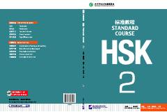

HSXitoy tilini o'rganish va HSK 2 imtihoniga tayyorlanish uchun mo'ljallangan rasmiy darslik.
Ushbu kitob Xitoy tilini o'rganuvchilar uchun mo'ljallangan bo'lib, HSK 2-darajali imtihoniga tayyorgarlik ko'rish va muloqot ko'nikmalarini rivojlantirishga yordam beradi. Qo'llanma amaliy mashg'ulotlar, kundalik mavzular va imtihon formatiga moslashtirilgan o'quv materiallarini o'z ichiga oladi. Kitob Xitoy tili xalqaro ta'lim markazlari va o'qituvchilar tomonidan tavsiya etilgan.